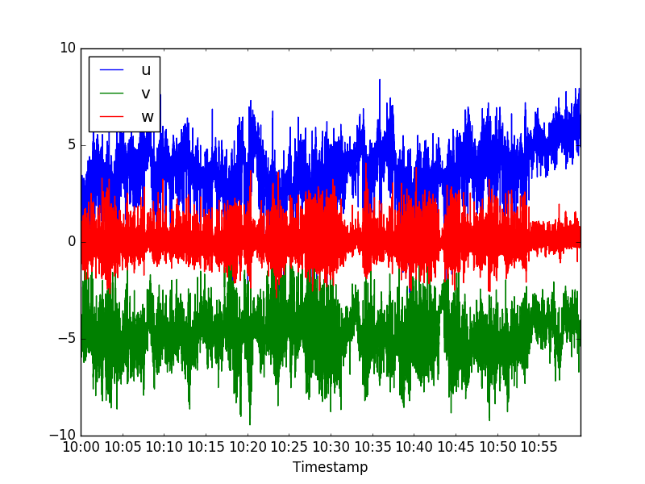

Getting started¶
This “Getting started” tutorial is a brief introduction to Pymicra. This is in no way supposed to be a complete representation of everything that can be done with Pymicra.
In this tutorial we use some example data and refer to some example python scripts that can be download here. Please feel free to explore both the example data and the example programs, as well as modify the programs for your own learning process!
Notation¶
Pymicra uses a specific notation to name each one of its columns. This notation is extremely important, because it is by these labels that Pymicra knows which variable is in each column. You can check the default notation with
In [1]: %%capture
...: import pymicra as pm
...: print(pm.notation)
...:
The output is too long to be reprodued here, but on the left you’ll see the full name of the variables (which corresponds to a notation namespace/attribute) and on the right you’ll see the default notation for that variable.
We recommend to use the default notation for the sake of simplicity, however,
you can change Pymicra’s notation at any time by altering the attributes of
pm.notation. For example, by default the notation for the mean is
'%s_mean', and every variable follows this base notation:
In [2]: pm.notation.mean
Out[2]: '%s_mean'
In [3]: pm.notation.mean_u
Out[3]: 'u_mean'
In [4]: pm.notation.mean_h2o_mass_concentration
Out[4]: 'conc_h2o_mean'
To change this, you have to change the mean notation and then re-build the
whole notation with the build method:
In [5]: pm.notation.mean = 'm_%s'
In [6]: pm.notation.build()
In [7]: pm.notation.mean_u
Out[7]: 'm_u'
In [8]: pm.notation.mean_h2o_mass_concentration
Out[8]: 'm_conc_h2o'
In [9]: pm.notation.h2o='v'
In [10]: pm.notation.build()
In [11]: pm.notation.mean_h2o_mass_concentration
Out[11]: 'm_conc_v'
If you just want to change the notation of one variable, but not the full notation, just don’t re-build. For example:
In [12]: pm.notation.mean_co2_mass_concentration = 'c_m'
In [13]: pm.notation.mean_co2_mass_concentration
Out[13]: 'c_m'
In [14]: pm.notation.mean_h2o_mass_concentration
Out[14]: 'm_conc_v'
It is important to note that this changes the notation used throughout every Pymicra function. If, however, you want to use a different notation in a specific part of the program (in one specific function for example) you can create a Notation object and pass it to the function, such as
In [15]: mynotation = pm.Notation()
In [16]: mynotation.co2='c'
In [17]: mynotation.build()
In [18]: fluxes = pm.eddyCovariance(data, units, notation=mynotation) # For example
In the example above the default Pymicra notation is left untouched, and a separate notation is defined which is then used in a Pymicra function separately.
Creating file configurations file¶
The easiest way to read data files is using a fileConfig object. This object holds
the configuration of the data files so you can just call this object when reading these files.
To make it easier, Pymicra prefers to read this configurations from a file. That way
you can write the configurations for some data files once, store it into a configuration file
and then use it from then on every time you want to read those data files. That is what
Pymicra calls a “file configuration file”, or “config file” for short. From that
file, Pymicra can create a pymicra.fileConfig object. Consider, for example, the config
file below
description='datalogger configuration file for a lake. Located at examples/lake.config'
variables={
0:'%Y-%m-%d',
1:'%H:%M:%S.%f',
2:'u',
3:'v',
4:'w',
5:'theta_v',
6:'mrho_h2o',
7:'mrho_co2',
8:'p',
9:'theta'}
units={
'u':'m/s',
'v':'m/s',
'w':'m/s',
'theta_v':'celsius',
'mrho_co2':'mmol/m**3',
'mrho_h2o':'mmol/m**3',
'p':'kPa',
'theta':'celsius'
}
columns_separator=','
frequency=20
header_lines=None
filename_format='%Y%m%d-%H%M.csv'
date_cols = [0, 1]
First of all, note that the .config file is written in Python syntax, so it
has to be able to actually be run on python. This has to be true for all
.config files.
Furthermore, the extension of the file does not matter. We adopt the
.config extension for clarity, but it could be anything else.
The previous config file describes the data files in the directory
../examples/ex_data/. Here’s an example of one such file for comparison:
2013-11-08,10:00:00.000000,2.375,-5.206,-0.103,27.06,1238.0,14.675,99.19,30.43,-0.303,-0.274,-0.269,-0.261
2013-11-08,10:00:00.050000,2.4930000000000003,-5.098,-0.018000000000000002,27.12,1196.0,14.409,99.199,30.43,-0.308,-0.275,-0.271,-0.263
2013-11-08,10:00:00.100000,2.263,-5.114,0.014,27.11,1220.0,14.636,99.102,30.43,-0.306,-0.277,-0.273,-0.263
2013-11-08,10:00:00.150000,2.21,-5.235,-0.012,27.11,1238.0,14.688,99.154,30.43,-0.308,-0.277,-0.273,-0.264
2013-11-08,10:00:00.200000,2.158,-5.174,-0.112,27.12,1174.0,14.476,99.154,30.44,-0.31,-0.277,-0.273,-0.264
2013-11-08,10:00:00.250000,2.334,-5.279,-0.092,27.1,1195.0,14.671,99.154,30.43,-0.308,-0.278,-0.273,-0.265
2013-11-08,10:00:00.300000,2.396,-5.2970000000000015,0.005,27.15,1198.0,14.669,99.154,30.43,-0.309,-0.279,-0.272,-0.264
2013-11-08,10:00:00.350000,2.494,-5.246,0.039,27.13,1197.0,14.722,99.154,30.44,-0.311,-0.279,-0.273,-0.264
2013-11-08,10:00:00.400000,2.263,-5.317,-0.079,27.12,1202.0,14.709,99.154,30.43,-0.311,-0.279,-0.275,-0.265
2013-11-08,10:00:00.450000,2.135,-5.176,-0.036000000000000004,27.08,1202.0,14.731,99.154,30.44,-0.314,-0.279,-0.275,-0.267
Note that not all columns of this file are described. Columns that are not
described are also read but are discarded by default. You can change that using
only_named_columns=False in the timeSeries function.
We obtain the config object with
In [19]: fconfig = pm.fileConfig('../examples/lake.config')
In [20]: print(fconfig)
<pymicra.fileConfig>
datalogger configuration file for a lake. Located at examples/lake.config
Each variable defined in this file works as a keyword, since it can also be
input manually when calling pymicra.fileConfig(). Thus, for more
information, you can also use help(pymicra.fileConfig). Now we explain the
keywords one by one. In the next section we will explain how to use this object
for reading a data file.
description¶
The description is optional. It’s a string that serves only to better identify the config file you’re dealing with. It might useful for storage purposes.
variables¶
The most important keyword is variables. This is a python dictionary where
each key is a column and its corresponding value is the variable in that
column. Note that we are using here the default notation to indicate which
variable is in which column. If a different notation is to be used here, then
you will have to define a new notation in your program (refer back to
Notation for that).
Note
From this point on, for simplicity, we will assume that the default notation is used.
It is imperative that the columns be named accordingly. For example, measuring
H2O contents in mmol/m^3 is different from measuring it in g/m^3 or mg/g. The
first is a molar density (moles per volume), the second is a mass density (mass
per volume) and the third is a mass concentration (mass per mass). In the
default notation these are indicated by the names 'mrho_h2o', 'rho_h2o'
and 'conc_h2o', respectively, and Pymicra needs to know which one is which.
Columns that contain parts of the timestamp have to have their name matching Python’s date format string directive, which themselves are the 1989 version default C standard format dates, which is common in many platforms.
This is useful only in case you want to index your data by timestamp, which is a huge advantage in some cases (check out what Pandas can do with timestamp-indexed data) but Pymicra can also work well without this. If you don’t wish to work with timestamps and want to work only by line number in each file, you can ignore these columns and indicate that you don’t want to parse dates. In fact, parsing of dates makes Pymicra a lot slower. Reading a file parsing its dates is about 5.5 times slower than reading the same file without parsing any dates!
units¶
The units keyword is also very important. It tells Pymicra in which units
each variable is being measured. Units are handled by Pint, so for more
details on how to define the units please refer to their documentation. Suffices
to say here that the format of the units are pretty intuitive. Some quick remarks
are
- prefer to define units unambiguously (
'g/(m*(s**2))'is generally preferred to'g/m/s**2', although both will work).- to define that a unit is dimensionless,
'1'will not work. Define it as'dimensionless'or'g/g'and so on.- if one variable does not have a unit (such as a sensor flag), you don’t have to include that variable.
- the keys of
unitsshould exactly match the values ofvariables.
columns_separator¶
The columns_separator keyword is what it sounds: what separates one column
from the other. Generally it is one character, such as a comma. A special case
happens is if the columns are separated by whitespaces of varying length, or
tabs. In that case it should be "whitespace".
frequency¶
The frequency keyword is the frequency of the data collection in Hertz.
header_lines¶
The keyword header_lines tells us which of the first lines are part of
the file header. If there is no header then is should be None. If there
are header lines than it should be a list or int. For example, if the first two
lines of the file are part of a header, it should be [0, 1]. If it were the
4 first lines, [0, 1, 2, 3] (range(4) would also be acceptable).
Header lines are not used by Pymicra and are therefore skipped.
filename_format¶
The filename_format keyword tells Pymicra how the data files are named.
date_cols¶
The date_cols keyword is optional. It is a list of integers that indicates
which of the columns are a part of the timestamp. If it’s not provided, then
Pymicra will assume that columns whose names have the character “%” in them are
part of the date and will try to parse them. If the default notation is used,
this should always be true.
Reading data¶
To read a data file or a list of data files we use the function timeSeries along with
a config file. Let us use the config file defined in the previous subsection with one of the data
file it describes:
In [21]: fname = '../examples/ex_data/20131108-1000.csv'
In [22]: fconfig = pm.fileConfig('../examples/lake.config')
In [23]: data, units = pm.timeSeries(fname, fconfig, parse_dates=True)
In [24]: print(data)
u v w theta_v mrho_h2o mrho_co2 p theta
Timestamp
2013-11-08 10:00:00.000 2.375 -5.206 -0.103 27.06 1238 14.675 99.190 30.43
2013-11-08 10:00:00.050 2.493 -5.098 -0.018 27.12 1196 14.409 99.199 30.43
2013-11-08 10:00:00.100 2.263 -5.114 0.014 27.11 1220 14.636 99.102 30.43
2013-11-08 10:00:00.150 2.210 -5.235 -0.012 27.11 1238 14.688 99.154 30.43
2013-11-08 10:00:00.200 2.158 -5.174 -0.112 27.12 1174 14.476 99.154 30.44
2013-11-08 10:00:00.250 2.334 -5.279 -0.092 27.10 1195 14.671 99.154 30.43
2013-11-08 10:00:00.300 2.396 -5.297 0.005 27.15 1198 14.669 99.154 30.43
2013-11-08 10:00:00.350 2.494 -5.246 0.039 27.13 1197 14.722 99.154 30.44
2013-11-08 10:00:00.400 2.263 -5.317 -0.079 27.12 1202 14.709 99.154 30.43
2013-11-08 10:00:00.450 2.135 -5.176 -0.036 27.08 1202 14.731 99.154 30.44
... ... ... ... ... ... ... ... ...
2013-11-08 10:59:59.500 4.951 -4.584 0.420 28.03 1261 14.772 99.102 32.08
2013-11-08 10:59:59.550 5.057 -4.436 0.492 28.00 1181 14.718 99.138 32.07
2013-11-08 10:59:59.600 5.145 -4.424 0.409 28.10 1216 14.889 99.112 32.08
2013-11-08 10:59:59.650 5.282 -4.038 0.448 28.03 1198 14.485 99.112 32.06
2013-11-08 10:59:59.700 5.065 -4.453 0.424 28.11 1184 14.578 99.138 32.07
2013-11-08 10:59:59.750 5.262 -4.703 0.126 27.98 1264 14.929 99.138 32.08
2013-11-08 10:59:59.800 5.323 -4.882 0.242 27.95 1229 14.258 99.138 32.07
2013-11-08 10:59:59.850 5.344 -5.119 0.457 27.96 1198 14.962 99.102 32.07
2013-11-08 10:59:59.900 5.281 -5.261 0.599 28.09 1231 14.615 99.112 32.07
2013-11-08 10:59:59.950 5.235 -4.801 0.362 28.02 1211 14.682 99.164 32.08
[72000 rows x 8 columns]
Note that data is a pandas.DataFrame object which contains the whole data available in the
datafile with each column being a variable. Since we indicated that we wanted to parse the dates
with the option parse_dates=True, each row has its respective timestamp.
If, otherwise, we were to ignore the dates, the result would be a integer-indexed dataset:
In [25]: data2, units = pm.timeSeries(fname, fconfig, parse_dates=False)
In [26]: print(data2)
u v w theta_v mrho_h2o mrho_co2 p theta
0 2.375 -5.206 -0.103 27.06 1238 14.675 99.190 30.43
1 2.493 -5.098 -0.018 27.12 1196 14.409 99.199 30.43
2 2.263 -5.114 0.014 27.11 1220 14.636 99.102 30.43
3 2.210 -5.235 -0.012 27.11 1238 14.688 99.154 30.43
4 2.158 -5.174 -0.112 27.12 1174 14.476 99.154 30.44
5 2.334 -5.279 -0.092 27.10 1195 14.671 99.154 30.43
6 2.396 -5.297 0.005 27.15 1198 14.669 99.154 30.43
7 2.494 -5.246 0.039 27.13 1197 14.722 99.154 30.44
8 2.263 -5.317 -0.079 27.12 1202 14.709 99.154 30.43
9 2.135 -5.176 -0.036 27.08 1202 14.731 99.154 30.44
... ... ... ... ... ... ... ... ...
71990 4.951 -4.584 0.420 28.03 1261 14.772 99.102 32.08
71991 5.057 -4.436 0.492 28.00 1181 14.718 99.138 32.07
71992 5.145 -4.424 0.409 28.10 1216 14.889 99.112 32.08
71993 5.282 -4.038 0.448 28.03 1198 14.485 99.112 32.06
71994 5.065 -4.453 0.424 28.11 1184 14.578 99.138 32.07
71995 5.262 -4.703 0.126 27.98 1264 14.929 99.138 32.08
71996 5.323 -4.882 0.242 27.95 1229 14.258 99.138 32.07
71997 5.344 -5.119 0.457 27.96 1198 14.962 99.102 32.07
71998 5.281 -5.261 0.599 28.09 1231 14.615 99.112 32.07
71999 5.235 -4.801 0.362 28.02 1211 14.682 99.164 32.08
[72000 rows x 8 columns]
And, as mentioned, this way is a lot faster:
In [27]: %timeit pm.timeSeries(fname, fconfig, parse_dates=False)
....: %timeit pm.timeSeries(fname, fconfig, parse_dates=True)
....:
10 loops, best of 3: 123 ms per loop
1 loops, best of 3: 641 ms per loop
Viewing and manipulating data¶
To view and manipulate data, mostly you have to follow Pandas’s DataFrame rules. For that we suggest that the user visit a Pandas tutorial. However, I’ll explain some main ideas here for the sake of completeness and introduce some few ideas specific for Pymicra that don’t exist for general Pandas DataFrames.
Printing and plotting¶
First, for viewing raw data on screen there’s printing. Slicing and indexing are supported by Pandas, but without support for units:
In [29]: print(data['theta_v'])
Timestamp
2013-11-08 10:00:00.000 27.06
2013-11-08 10:00:00.050 27.12
2013-11-08 10:00:00.100 27.11
2013-11-08 10:00:00.150 27.11
2013-11-08 10:00:00.200 27.12
2013-11-08 10:00:00.250 27.10
...
2013-11-08 10:59:59.700 28.11
2013-11-08 10:59:59.750 27.98
2013-11-08 10:59:59.800 27.95
2013-11-08 10:59:59.850 27.96
2013-11-08 10:59:59.900 28.09
2013-11-08 10:59:59.950 28.02
Name: theta_v, dtype: float64
In [30]: print(data[['u', 'v', 'w']])
u v w
Timestamp
2013-11-08 10:00:00.000 2.375 -5.206 -0.103
2013-11-08 10:00:00.050 2.493 -5.098 -0.018
2013-11-08 10:00:00.100 2.263 -5.114 0.014
2013-11-08 10:00:00.150 2.210 -5.235 -0.012
2013-11-08 10:00:00.200 2.158 -5.174 -0.112
2013-11-08 10:00:00.250 2.334 -5.279 -0.092
... ... ... ...
2013-11-08 10:59:59.700 5.065 -4.453 0.424
2013-11-08 10:59:59.750 5.262 -4.703 0.126
2013-11-08 10:59:59.800 5.323 -4.882 0.242
2013-11-08 10:59:59.850 5.344 -5.119 0.457
2013-11-08 10:59:59.900 5.281 -5.261 0.599
2013-11-08 10:59:59.950 5.235 -4.801 0.362
[72000 rows x 3 columns]
In [31]: print(data['20131108 10:15:00.000':'20131108 10:17:00.000'])
u v w theta_v mrho_h2o mrho_co2 p theta
Timestamp
2013-11-08 10:15:00.000 2.634 -4.351 0.107 27.30 1229 15.002 99.128 30.80
2013-11-08 10:15:00.050 2.869 -4.249 0.040 27.44 1175 14.751 99.164 30.80
2013-11-08 10:15:00.100 3.320 -4.326 -0.079 27.26 1159 14.689 99.138 30.80
2013-11-08 10:15:00.150 2.759 -4.339 -0.007 27.24 1170 14.715 99.190 30.80
2013-11-08 10:15:00.200 2.748 -4.128 -0.038 27.21 1174 14.681 99.190 30.80
2013-11-08 10:15:00.250 3.149 -4.074 -0.387 27.20 1190 14.662 99.173 30.80
... ... ... ... ... ... ... ... ...
2013-11-08 10:17:00.700 3.910 -4.698 -0.366 27.27 1170 14.592 99.128 30.85
2013-11-08 10:17:00.750 3.824 -4.535 -0.313 27.33 1165 14.492 99.164 30.85
2013-11-08 10:17:00.800 3.758 -4.353 -0.116 27.28 1103 14.495 99.164 30.85
2013-11-08 10:17:00.850 3.761 -4.454 -0.010 27.28 1128 14.611 99.164 30.85
2013-11-08 10:17:00.900 3.546 -4.766 -0.433 27.28 1131 14.709 99.147 30.85
2013-11-08 10:17:00.950 3.238 -4.601 -0.378 27.29 1130 14.809 99.147 30.85
[2420 rows x 8 columns]
Note that Pandas “guesses” if the argument you pass ('theta_v' or
'2013-11-08 10:15:00' etc.) is a column indexer or a row indexer. To use
these unambiguously, use the .loc method as
In [32]: print(data.loc['2013-11-08 10:15:00.000':'2013-11-08 10:17:00.000', ['u','v','w']])
u v w
Timestamp
2013-11-08 10:15:00.000 2.634 -4.351 0.107
2013-11-08 10:15:00.050 2.869 -4.249 0.040
2013-11-08 10:15:00.100 3.320 -4.326 -0.079
2013-11-08 10:15:00.150 2.759 -4.339 -0.007
2013-11-08 10:15:00.200 2.748 -4.128 -0.038
2013-11-08 10:15:00.250 3.149 -4.074 -0.387
... ... ... ...
2013-11-08 10:17:00.700 3.910 -4.698 -0.366
2013-11-08 10:17:00.750 3.824 -4.535 -0.313
2013-11-08 10:17:00.800 3.758 -4.353 -0.116
2013-11-08 10:17:00.850 3.761 -4.454 -0.010
2013-11-08 10:17:00.900 3.546 -4.766 -0.433
2013-11-08 10:17:00.950 3.238 -4.601 -0.378
[2420 rows x 3 columns]
This method is actually preferred and you can find more information on this topic here.
To view these data with units, you can use the .with_units() method. Note that, although this method returns
a Pandas DataFrame, it is not meant for calculations. Currently the DataFrame it returns is meant for
visualization purposes only! The previous output would like this using units:
In [33]: print(data.with_units(units)['theta_v'])
<degC>
Timestamp
2013-11-08 10:00:00.000 27.06
2013-11-08 10:00:00.050 27.12
2013-11-08 10:00:00.100 27.11
2013-11-08 10:00:00.150 27.11
2013-11-08 10:00:00.200 27.12
2013-11-08 10:00:00.250 27.10
... ...
2013-11-08 10:59:59.700 28.11
2013-11-08 10:59:59.750 27.98
2013-11-08 10:59:59.800 27.95
2013-11-08 10:59:59.850 27.96
2013-11-08 10:59:59.900 28.09
2013-11-08 10:59:59.950 28.02
[72000 rows x 1 columns]
In [34]: print(data.with_units(units)[['u', 'v', 'w']])
u v w
<meter / second> <meter / second> <meter / second>
Timestamp
2013-11-08 10:00:00.000 2.375 -5.206 -0.103
2013-11-08 10:00:00.050 2.493 -5.098 -0.018
2013-11-08 10:00:00.100 2.263 -5.114 0.014
2013-11-08 10:00:00.150 2.210 -5.235 -0.012
2013-11-08 10:00:00.200 2.158 -5.174 -0.112
2013-11-08 10:00:00.250 2.334 -5.279 -0.092
... ... ... ...
2013-11-08 10:59:59.700 5.065 -4.453 0.424
2013-11-08 10:59:59.750 5.262 -4.703 0.126
2013-11-08 10:59:59.800 5.323 -4.882 0.242
2013-11-08 10:59:59.850 5.344 -5.119 0.457
2013-11-08 10:59:59.900 5.281 -5.261 0.599
2013-11-08 10:59:59.950 5.235 -4.801 0.362
[72000 rows x 3 columns]
In [35]: print(data.with_units(units)['2013-11-08 10:15:00'])
u v w theta_v \
<meter / second> <meter / second> <meter / second> <degC>
Timestamp
2013-11-08 10:15:00.000 2.634 -4.351 0.107 27.30
2013-11-08 10:15:00.050 2.869 -4.249 0.040 27.44
2013-11-08 10:15:00.100 3.320 -4.326 -0.079 27.26
2013-11-08 10:15:00.150 2.759 -4.339 -0.007 27.24
2013-11-08 10:15:00.200 2.748 -4.128 -0.038 27.21
2013-11-08 10:15:00.250 3.149 -4.074 -0.387 27.20
... ... ... ... ...
2013-11-08 10:15:00.700 3.057 -4.090 -0.230 27.28
2013-11-08 10:15:00.750 3.386 -4.169 -0.082 27.21
2013-11-08 10:15:00.800 3.731 -4.180 0.291 27.42
2013-11-08 10:15:00.850 3.676 -4.100 0.021 27.29
2013-11-08 10:15:00.900 3.796 -4.390 0.170 27.24
2013-11-08 10:15:00.950 3.294 -3.322 0.560 27.50
mrho_h2o mrho_co2 p theta
<millimole / meter ** 3> <millimole / meter ** 3> <kilopascal> <degC>
Timestamp
2013-11-08 10:15:00.000 1229 15.002 99.128 30.8
2013-11-08 10:15:00.050 1175 14.751 99.164 30.8
2013-11-08 10:15:00.100 1159 14.689 99.138 30.8
2013-11-08 10:15:00.150 1170 14.715 99.190 30.8
2013-11-08 10:15:00.200 1174 14.681 99.190 30.8
2013-11-08 10:15:00.250 1190 14.662 99.173 30.8
... ... ... ... ...
2013-11-08 10:15:00.700 1151 14.758 99.164 30.8
2013-11-08 10:15:00.750 1195 14.318 99.164 30.8
2013-11-08 10:15:00.800 1172 14.369 99.164 30.8
2013-11-08 10:15:00.850 1173 14.687 99.164 30.8
2013-11-08 10:15:00.900 1153 14.442 99.164 30.8
2013-11-08 10:15:00.950 1176 14.724 99.208 30.8
[20 rows x 8 columns]
We can also plot the data on screen so we can view it interactively. This can be done directly from the DataFrame with
In [36]: from matplotlib import pyplot as plt
In [37]: data[['u', 'v', 'w']].plot()
Out[37]: <matplotlib.axes._subplots.AxesSubplot at 0x7f640b09bd50>
In [38]: plt.show()

Using the plt.show() command, the plot above would plot interactively. If
we had used plt.savefig('figure.png') instead, it would have saved the
figure as png. For more on plotting, you can checkout Pandas’s visualization
guide and
find out ways to make this plot look nicer, how to render it with LaTeX and
some more tricks.
Pymicra also has an .xplot method, which brings a little more options to
Pandas’s .plot() method.
Todo
give xplot examples
Converting units¶
You can manually convert between units using the contents from Manipulating
and the Pint package. But Pymicra has a very useful method to do this called .convert_cols (more exist,
but let’s focus on this one).
Let’s, for example, convert some units:
In [39]: conversions = {'p':'pascal', 'mrho_h2o':'mole/m^3', 'theta_v':'kelvin'}
In [40]: print(data.convert_cols(conversions, units, inplace_units=False))
( u v w theta_v mrho_h2o mrho_co2 p theta
Timestamp
2013-11-08 10:00:00.000 2.375 -5.206 -0.103 300.21 1.238 14.675 99190 30.43
2013-11-08 10:00:00.050 2.493 -5.098 -0.018 300.27 1.196 14.409 99199 30.43
2013-11-08 10:00:00.100 2.263 -5.114 0.014 300.26 1.220 14.636 99102 30.43
2013-11-08 10:00:00.150 2.210 -5.235 -0.012 300.26 1.238 14.688 99154 30.43
2013-11-08 10:00:00.200 2.158 -5.174 -0.112 300.27 1.174 14.476 99154 30.44
2013-11-08 10:00:00.250 2.334 -5.279 -0.092 300.25 1.195 14.671 99154 30.43
... ... ... ... ... ... ... ... ...
2013-11-08 10:59:59.700 5.065 -4.453 0.424 301.26 1.184 14.578 99138 32.07
2013-11-08 10:59:59.750 5.262 -4.703 0.126 301.13 1.264 14.929 99138 32.08
2013-11-08 10:59:59.800 5.323 -4.882 0.242 301.10 1.229 14.258 99138 32.07
2013-11-08 10:59:59.850 5.344 -5.119 0.457 301.11 1.198 14.962 99102 32.07
2013-11-08 10:59:59.900 5.281 -5.261 0.599 301.24 1.231 14.615 99112 32.07
2013-11-08 10:59:59.950 5.235 -4.801 0.362 301.17 1.211 14.682 99164 32.08
[72000 rows x 8 columns], {'theta_v': <Unit('kelvin')>, 'p': <Unit('pascal')>, 'mrho_h2o': <Unit('mole / meter ** 3')>})
Note that the units dictionary is updated automatically if the
inplace_units keyword is true. The default is false for safety reasons, but
passing this keyword as true is much simpler and compact:
In [41]: conversions = {'theta':'kelvin', 'theta_v':'kelvin'}
In [42]: data = data.convert_cols(conversions, units, inplace_units=True)
In [43]: print(data.with_units(units))
u v w theta_v \
<meter / second> <meter / second> <meter / second> <kelvin>
Timestamp
2013-11-08 10:00:00.000 2.375 -5.206 -0.103 300.21
2013-11-08 10:00:00.050 2.493 -5.098 -0.018 300.27
2013-11-08 10:00:00.100 2.263 -5.114 0.014 300.26
2013-11-08 10:00:00.150 2.210 -5.235 -0.012 300.26
2013-11-08 10:00:00.200 2.158 -5.174 -0.112 300.27
2013-11-08 10:00:00.250 2.334 -5.279 -0.092 300.25
... ... ... ... ...
2013-11-08 10:59:59.700 5.065 -4.453 0.424 301.26
2013-11-08 10:59:59.750 5.262 -4.703 0.126 301.13
2013-11-08 10:59:59.800 5.323 -4.882 0.242 301.10
2013-11-08 10:59:59.850 5.344 -5.119 0.457 301.11
2013-11-08 10:59:59.900 5.281 -5.261 0.599 301.24
2013-11-08 10:59:59.950 5.235 -4.801 0.362 301.17
mrho_h2o mrho_co2 p theta
<millimole / meter ** 3> <millimole / meter ** 3> <kilopascal> <kelvin>
Timestamp
2013-11-08 10:00:00.000 1238 14.675 99.190 303.58
2013-11-08 10:00:00.050 1196 14.409 99.199 303.58
2013-11-08 10:00:00.100 1220 14.636 99.102 303.58
2013-11-08 10:00:00.150 1238 14.688 99.154 303.58
2013-11-08 10:00:00.200 1174 14.476 99.154 303.59
2013-11-08 10:00:00.250 1195 14.671 99.154 303.58
... ... ... ... ...
2013-11-08 10:59:59.700 1184 14.578 99.138 305.22
2013-11-08 10:59:59.750 1264 14.929 99.138 305.23
2013-11-08 10:59:59.800 1229 14.258 99.138 305.22
2013-11-08 10:59:59.850 1198 14.962 99.102 305.22
2013-11-08 10:59:59.900 1231 14.615 99.112 305.22
2013-11-08 10:59:59.950 1211 14.682 99.164 305.23
[72000 rows x 8 columns]
Manipulating¶
Manipulating data is pretty intuitive with Pandas. For example
In [44]: data['rho_air'] = data['p']/(287.058*data['theta_v'])
In [45]: print(data['rho_air'])
Timestamp
2013-11-08 10:00:00.000 0.001151
2013-11-08 10:00:00.050 0.001151
2013-11-08 10:00:00.100 0.001150
2013-11-08 10:00:00.150 0.001150
2013-11-08 10:00:00.200 0.001150
2013-11-08 10:00:00.250 0.001150
...
2013-11-08 10:59:59.700 0.001146
2013-11-08 10:59:59.750 0.001147
2013-11-08 10:59:59.800 0.001147
2013-11-08 10:59:59.850 0.001147
2013-11-08 10:59:59.900 0.001146
2013-11-08 10:59:59.950 0.001147
Name: rho_air, dtype: float64
If, however, you’re not familiar with Pandas and prefer to just stick with what
you know, you can get Numpy arrays from columns using the .values
attribute:
In [46]: P = data['p'].values
In [47]: Tv = data['theta_v'].values
In [48]: print(type(Tv))
<type 'numpy.ndarray'>
In [49]: rho_air = P/(287.058*Tv)
In [50]: print(rho_air)
[ 0.00115099 0.00115087 0.00114978 ..., 0.00114654 0.00114616
0.00114702]
In [51]: print(type(rho_air))
<type 'numpy.ndarray'>
Doing that you can step out of Pandas and do your own calculations using your own Python or Numpy code. This is pretty advantageous if you have a lot of routines that are already written in your own way.